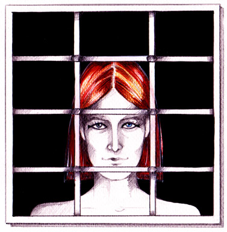

|  |
June 2002. I am with friends at a summer house. Suddenly our sense of smell
becomes aroused by an intense and especially fine scent of incense, that none of us has ever
smelled before. It is the first time I can hardly use the word scent, because what I smell
greatly surpasses it. For the first time in my life I experience the real meaning of the word
"aroma".
We try to determine whether it is coming from an external source. We look
around the other balconies, but nobody is there. We try to see whether the aroma comes from
nature itself, but there is nothing with the scent of incense, that could be creating such an
aroma. I feel moved within.
|
I enter the house. Outside the window I see a man, or so it seems to me, looking at me. I
know within that he isn't human. He is a man and a woman at the same time. He has a very
delicate and fine figure with a thin profile and straight red hair cut in a square shape. He
reminds me of a painting by Roseti. Normally I would be scared, but I know in me that this
figure is not human, that it comes from the spiritual world and is indeed familiar to me. We
communicate mentally for seconds. I send the message "Don't be curious". He looks at me
intensely; I don't exactly see his eyes, but I feel them. Then he turns and disappears, as in
animated drawings, in the twinkling of an eye. But how could he "leave" differently? Since he
is Light, this is how fast he moves.
|
|
|
When the first emotion passes, I run to tell my friends. I have a feeling about
who he was, but I won't express it. Many times in the future I will seek inside me the truth
about the identity of this Being.
What I wonder after everything has happened is why he appeared to me and
indeed from the specific window, which has rails, so the figure seemed imprisoned. Then the
message forms clearly inside me: the "imprisoned" is me and the figure sends me the message
"Free your inner angel from the prison, don't hold me imprisoned". And why this
particular moment, why today?
|
|
I realise that I have kept locked inside me what I know long enough and this day I make the
decision to express it. I would go over the correctness of this decision several times in the
future. But the message was clear: I had to release what I am, what is inside me.
The prison is all the negative situations, actually non-existent; all the darkness in which
the soul is imprisoned. This characteristically shows when everything is excellent externally,
when people generously give us their love, but we disbelieve, play power games, and without
understanding it, we try to manipulate others rather than love them.
In the future there will still be more times when this aroma of incense will visit us, many
times that we will experience the word "devoutness". The emotion of this experience
always remains the same, whenever I recall it.
|
|
|
{kind=link}
{kind=link}